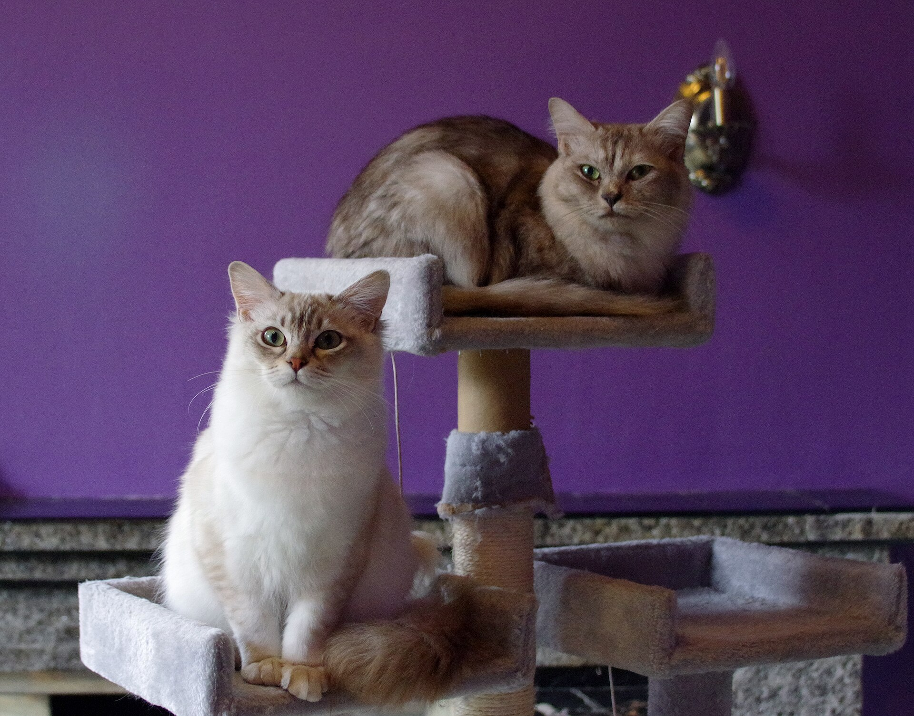

Bist du bereit für ein Tier?
15 ehrliche Fragen. Keine Moralkeule, aber auch kein Schönreden. Antworte so, wie dein Leben wirklich aussieht – nicht so, wie du es dir wünschst.
15 FragenEhrlich antwortenVor dem Tier

Kein Quiz für dein Ego
Antworte so, wie dein Alltag wirklich ist.
Der Test ist absichtlich streng. Nicht um dich kleinzumachen, sondern weil ein Tier später keine Ausrede versteht.
0/15 beantwortet
1. Wie viele Stunden am Tag bist du zu Hause?
2. Hast du Rücklagen für tierärztliche Notfälle?
3. Wie stabil ist deine Lebenssituation?
4. Sind alle im Haushalt einverstanden?
5. Bist du bereit, dein Tier 10–20 Jahre zu versorgen?
6. Hast du einen Plan für Urlaub und Notfälle?
7. Warum willst du ein Tier?
8. Hast du dich über die spezifischen Bedürfnisse der gewünschten Tierart informiert?
9. Wie reagierst du, wenn dein Tier etwas beschädigt oder sich daneben benimmt?
10. Bist du bereit, dein Tier kastrieren zu lassen?
11. Kannst du dir vorstellen, ein altes oder krankes Tier zu pflegen?
12. Hast du einen Tierarzt in der Nähe?
13. Was passiert mit dem Tier, wenn sich dein Leben ändert?
14. Wie viel Platz hast du?
15. Hast du Allergien gegen Tierhaare, Federn oder Staub?
Vorher teilen
Der beste Zeitpunkt für diesen Test ist vor dem Tier.
Schick ihn jemandem, der gerade „nur mal guckt". Nach dem Kauf wird aus Einsicht viel schneller Rechtfertigung.